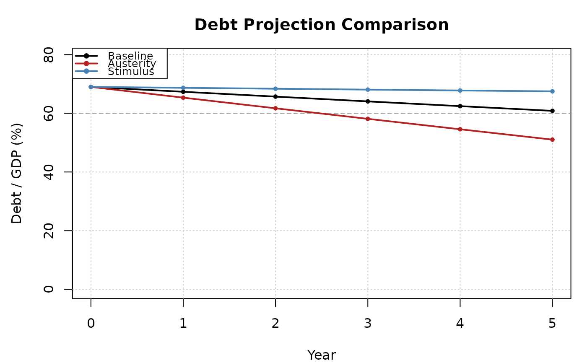

Produces a side-by-side comparison of multiple debt-to-GDP projections, aligning them by year and computing terminal values.
Value
An S3 object of class dk_comparison containing:
- paths
A
data.framewith ayearcolumn and one column per scenario, giving the debt-to-GDP path.- terminal
Named numeric vector of terminal debt-to-GDP ratios.
Examples
d <- dk_sample_data()
base <- dk_project(tail(d$debt, 1), 0.03, 0.04, 0.01, horizon = 5)
austerity <- dk_project(tail(d$debt, 1), 0.03, 0.04, 0.03, horizon = 5)
stimulus <- dk_project(tail(d$debt, 1), 0.03, 0.05, -0.01, horizon = 5)
comp <- dk_compare(
Baseline = base,
Austerity = austerity,
Stimulus = stimulus
)
comp
#>
#> ── Debt Projection Comparison ──────────────────────────────────────────────────
#> • 3 scenarios: "Baseline", "Austerity", and "Stimulus"
#>
#> Terminal debt/GDP:
#> Baseline 60.8%
#> Austerity 51%
#> Stimulus 67.5%
plot(comp)
